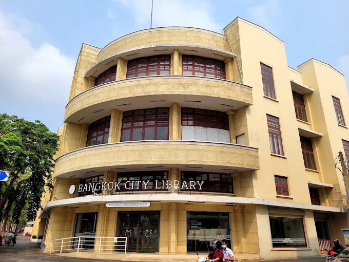

หอสมุดเมืองกรุงเทพมหานคร

หอสมุดเมืองกรุงเทพมหานคร
หอสมุดเมืองกรุงเทพมหานคร (Bangkok City Library) ได้รับการคัดเลือกจากองค์การยูเนสโก (UNESCO) ให้เป็น **“เมืองหนังสือโลก ประจำปี ๒๕๕๖”** และเป็นส่วนหนึ่งของความพยายามในการทำให้กรุงเทพฯ เป็น “มหานครแห่งการเรียนรู้” โดยหอสมุดนี้มีหน้าที่รวบรวมข้อมูลประวัติศาสตร์ ภูมิปัญญาท้องถิ่น และเรื่องราวของกรุงเทพมหานคร ตั้งแต่อดีตจนถึงปัจจุบัน หอสมุดตั้งอยู่ที่สี่แยกคอกวัว ถนนราชดำเนินกลางในอาคารที่มีความสำคัญทางประวัติศาสตร์ ซึ่งออกแบบโดยผสมผสานระหว่างสถาปัตยกรรมตะวันตกและศิลปะไทย อาคารมีพื้นที่รวม 4,880.38 ตารางเมตรและเปิดให้บริการประชาชนเพื่อการศึกษาค้นคว้าและเรียนรู้โดยใช้เทคโนโลยีที่ทันสมัยในการนำเสนอข้อมูล.
ข้อมูลเพิ่มเติม
ค่าเข้าชม: สำหรับผู้ที่ไม่ใช่สมาชิกห้องสมุด มีค่าเข้าชม 100 บาทต่อท่าน
การเดินทาง
BTS :สถานีใกล้เคียง: สถานีสาทร (Sathorn Station) เมื่อออกจากสถานีสาทร เดินทางโดยแท็กซี่หรือรถประจำทางไปยังห้องสมุด (ห่างจากสถานีประมาณ 1 กิโลเมตร)
โดยรถประจำทาง: สายรถเมล์ที่ผ่าน ได้แก่ สาย 75, 77, 16, 47, 48, 66
ที่ตั้ง: 195 ถนนสุรวงศ์ แขวงสุริยวงศ์ เขตบางรัก กรุงเทพมหานคร
เวลา:
- วันอังคาร – วันอาทิตย์: 09.30 – 17.00 น.
- วันจันทร์และวันหยุดนักขัตฤกษ์: ปิดทำการ
ดูข้อมูล: https://www.facebook.com/BOTLearningCenter หรือ https://www.bot.or.th/th/home.html